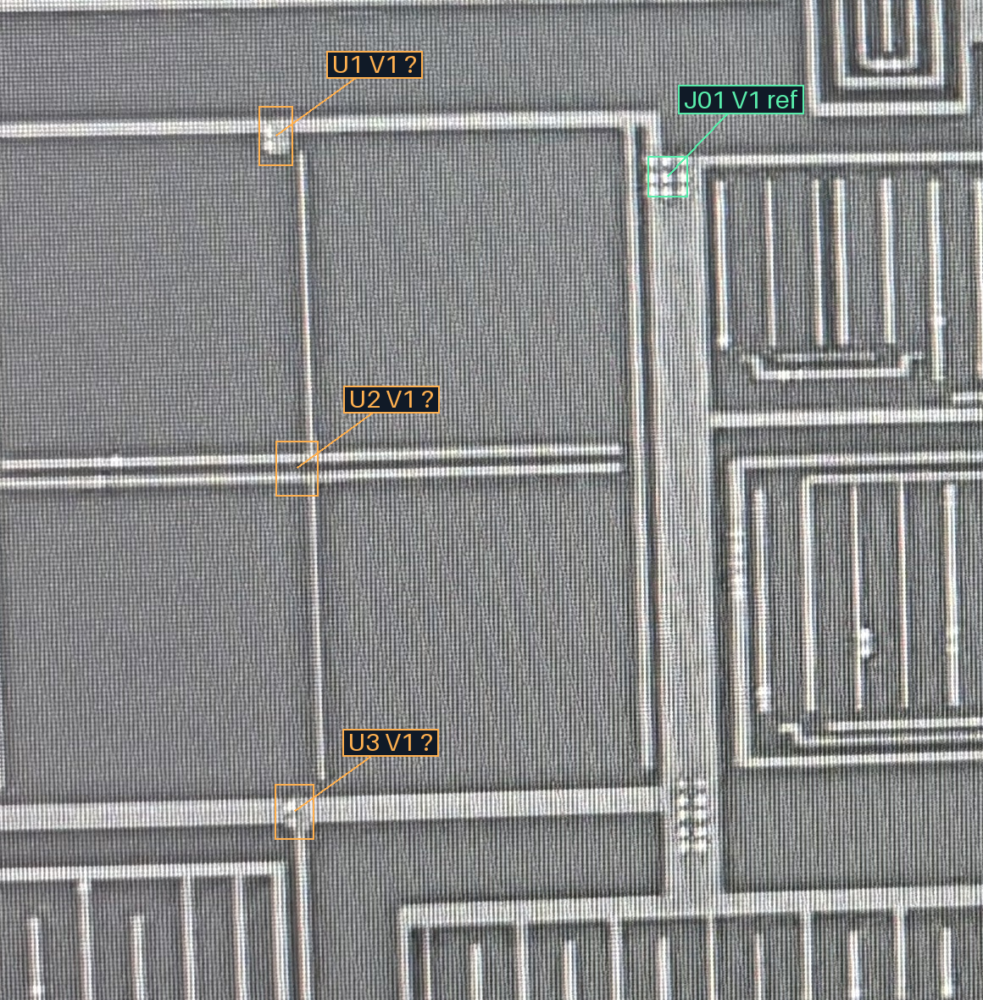
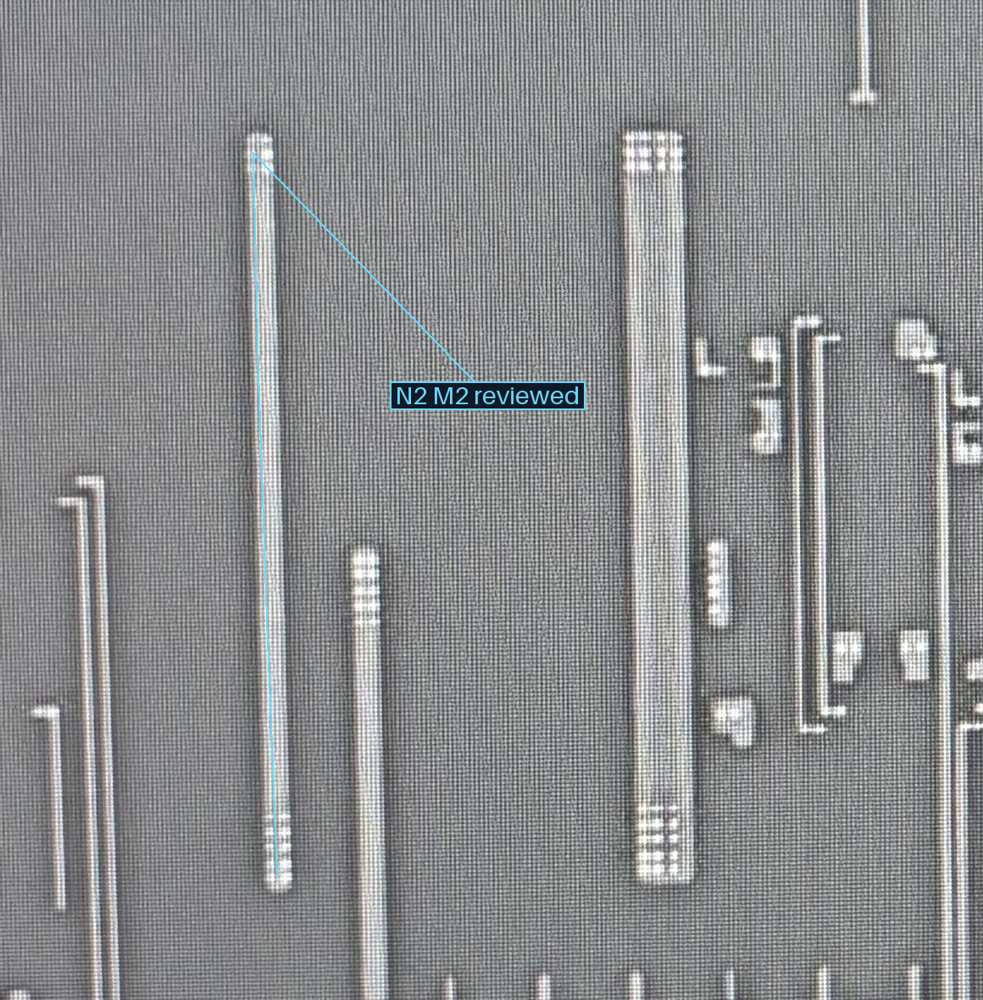
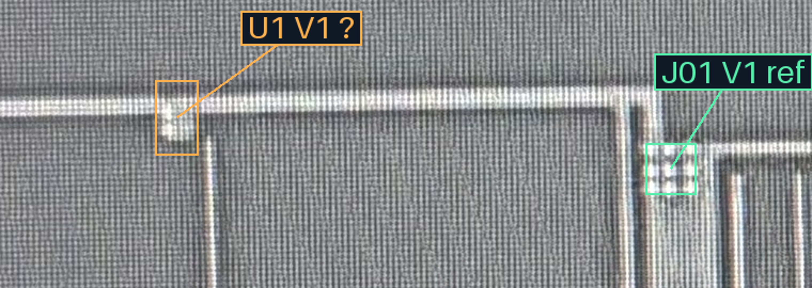
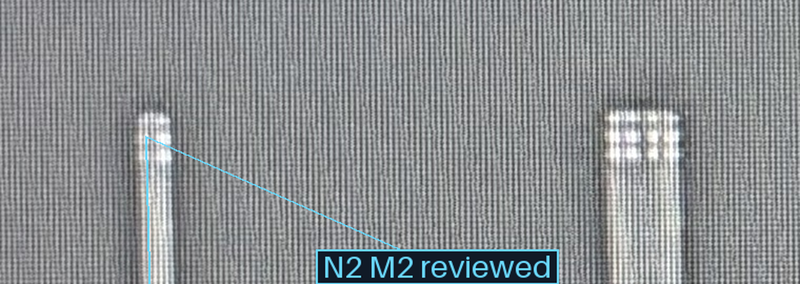
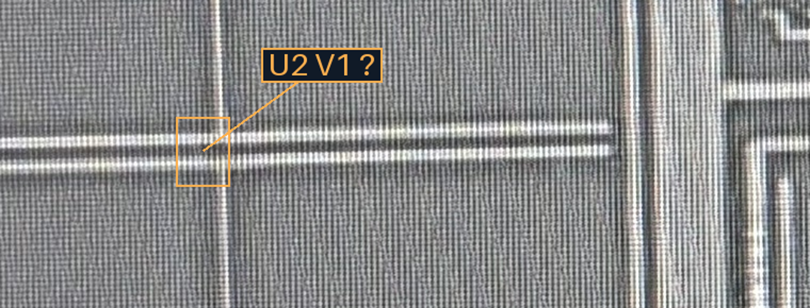
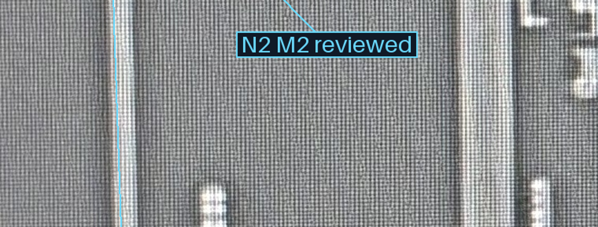
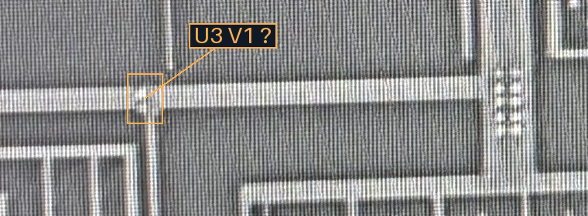
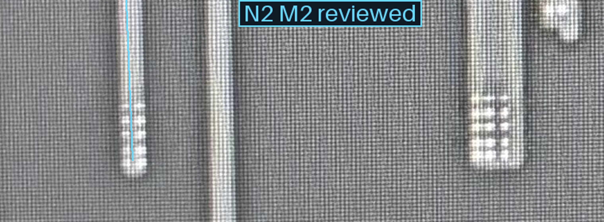

2026-10-23 · 本轮八组批准 · 13条已审局部路径
本轮先在M1原图判断是否存在V1；M1/M2尚无本处合格局部对齐，暂不要求承载落点批准。U1／U3有局部亮斑，U2目前不清楚；亮斑也可能是连续M1反光，不能仅凭十字交会认孔。
本轮请按U1／U2／U3答：“有V1”“只是M1交会或反光”“仍不清楚”。若从结构能确认承载可附注；先核身份，之后再完成局部对齐／落点检查，不逐孔计数。
M1 · 打开完整宽图

M2 · 打开完整宽图

M1 · 打开完整放大图

M2 · 打开完整放大图

M1 · 打开完整放大图

M2 · 打开完整放大图

M1 · 打开完整放大图

M2 · 打开完整放大图
